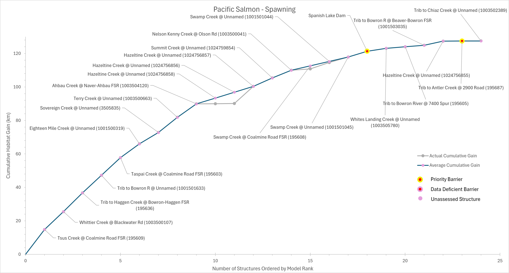
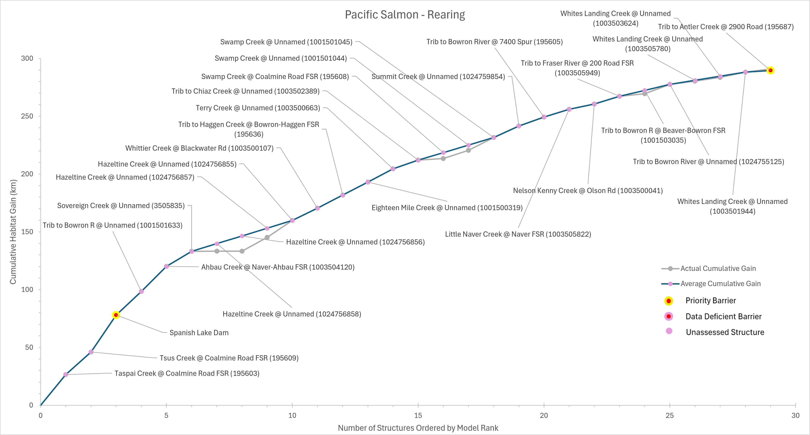

Executive Summary
The purpose of the Lhtako Dene Nation (LDN) Territory Watershed Connectivity Restoration Plan (WCRP) is to improve understanding of habitat connectivity for Coho Salmon (Oncorhynchus kisutch), Chum Salmon (O. keta), and Sockeye Salmon (O. nerka) in the portions of the Quesnel, Cariboo, Cottonwood, and Bowron watersheds within LDN territory. For practicality, these watersheds will be referred to as “LDN watersheds” throughout the report. Local data and knowledge are combined with connectivity modelling to estimate current connectivity status and identify structures that potentially block the most habitat. This informs the prioritization of field assessments to close the most significant knowledge gaps efficiently. Information from field assessments of barrier status and habitat condition are incorporated into the model, improving understanding of which barriers block the most habitat, and informing restoration prioritization. As knowledge gaps are closed and barriers are addressed, this plan will be revised to summarize progress and provide updated estimates of connectivity status and the status and relative importance of remaining structures.
In the LDN watersheds, X km of Pacific salmon spawning habitat are currently connected to the ocean and X km are disconnected from it. This means that X% of the X km of total habitat is connected.
In the LDN watersheds, X km of Pacific salmon rearing habitat are currently connected to the ocean and X km are disconnected from it. This means that X% of the X km of total habitat is connected.
In the LDN watersheds, X structures potentially disconnect Pacific salmon spawning habitat. Of these, X are identified as barriers in need of rehabilitation (priority barriers), X are identified as barriers that do not warrant rehabilitation (non-actionable), and X require further field assessment.
In the LDN watersheds, X structures potentially disconnect Pacific salmon rearing habitat. Of these, X are identified as barriers in need of rehabilitation (priority barriers), X are identified as barriers that do not warrant rehabilitation (non-actionable), and X require further field assessment.




This WCRP was initiated in 2023. The initial development of the WCRP included portions of the Quesnel, Bowron, and Cariboo watersheds. Several scoping exercises were completed by the planning team to help guide the initial development of the WCRP, including a threats assessment that detailed the extent, severity, and overall threat of all five barrier types in the Bowron, Quesnel, and Cariboo (see Appendix D). Situation analyses were also completed by the planning team to identify factors that contribute to the prevalence of culverts and dams on the landscape (see Appendix E). In 2025, the geographic scope of the WCRP expanded to include portions of the Cottonwood watershed. Since 2023, the passability of X structures has been assessed, and further habitat assessments were completed at X of these.